In hoofdstuk 10 wordt de berekening van de stromen in geval van een kortsluiting ergens in het net toegelicht. Voor diverse soorten kortsluiting wordt uitvoerig beschreven hoe aan de hand van de internationaal erkende norm IEC 60909 de stroom op de kortsluitplaats en de bijdrage aan de kortsluitstroom vanuit overige delen van het net kan worden berekend. Ook wordt de methode van sequentiële storingsanalyse toegelicht, waarmee meer informatie over stromen en spanningen tijdens een kortsluiting kan worden verkregen.
Elektrische installaties moeten zodanig worden ontworpen en gebouwd dat bij het optreden van kortsluitingen geen gevaar ontstaat voor personen en dat de installatie niet beschadigd raakt. Bij de grote stromen, die tijdens kortsluitingen vloeien, treden grote elektromagnetische krachten tussen de stroomvoerende delen op. Daarnaast worden de stroomvoerende delen snel warm. De gevolgen van een kortsluiting kunnen worden beperkt met een doelmatige beveiliging, die in staat is de grootst optredende kortsluitstroom te onderbreken. Kortsluitberekeningen spelen een grote rol bij het ontwerpen van het elektriciteitsnet. Met de kortsluitstroomberekeningen wordt onderzocht of de netcomponenten bij het optreden van een kortsluiting kortsluitvast zijn. De kortsluitstroomberekening richt zich op het vaststellen van het stroomgedrag in het elektriciteitsnet en op de fysieke eigenschappen van de netcomponent. Het doel van de berekeningen is drieledig:
Een kortsluiting gaat in de regel gepaard met een relatief grote stroom. Hierbij geldt dat het kwadraat van de stroomwaarde evenredig is met:
De uitwerking van beide effecten moet worden onderzocht voor alle netcomponenten waar de als gevolg van de kortsluiting verhoogde stroom doorheen loopt. In distributienetten blijkt dat het thermische effect de meeste aandacht verdient. Maar ook het dynamische effect moet worden berekend, vanwege de soms zeer grote krachten die in de installaties kunnen optreden. Om die reden worden componenten getest om de schade voor personen en de omgeving bij het doorlaten van een kortsluitstroom zoveel mogelijk te beperken.
Als voorbeeld voor de uitwerking van de krachten die vrijkomen bij een kortsluiting, toont figuur 10.1 het resultaat van een kortsluiting in een 10 kV-kabel, die op 60 cm diepte begraven is. De kortsluitstroom bedroeg ongeveer 8 kA. De kracht van de explosie was zo groot, dat de grond naast de put omhoog is gekomen en deze de stoeptegels heeft opgelicht.
Voor de berekening van de kortsluitvastheid is het van belang de maximale waarde van de kortsluitstroom te kennen. Voor de coördinatie van de beveiligingen en de selectiviteit is tevens de minimale kortsluitstroom van belang. Bij een goede selectiviteit worden de gevolgen van de storingen beperkt.
Het is mogelijk met behulp van een dynamische simulatie een redelijk nauwkeurig beeld te berekenen van het verloop van de stroom op de foutplaats als functie van de tijd, vanaf het begin van de kortsluiting tot het moment dat deze is opgeheven. In de meeste praktische gevallen is een dergelijke uitgebreide berekening echter niet nodig. Van belang zijn slechts enkele kenmerkende waarden van het stroomverloop. Deze kunnen met voldoende nauwkeurigheid worden bepaald met eenvoudiger methoden, waarvan er in dit hoofdstuk twee worden behandeld:
Om een goed beeld te krijgen van het gedrag van een kortsluitstroom, geeft figuur 10.2 het verloop weer van de stroom tijdens een driefasenkortsluiting. In dit voorbeeld bevindt de kortsluiting zich elektrisch gezien ver van een generator. Het valt op dat de stroom bij een kleine waarde begint en vervolgens een waarde bereikt van bijna twee maal de amplitude van de kortsluitstroom. Deze hoogste stroomwaarde treedt op binnen de eerste periode van de kortsluitstroom en wordt de piek-waarde ip genoemd. De maximale waarde die ip kan aannemen kan worden bereikt als de kortsluiting begint op het moment van de spanningsnuldoorgang in de betrokken fase. In een driefasesysteem kan dit maar bij één fase tegelijk plaatsvinden en daarom kan dit maximum alleen in die betreffende fase optreden. De hoogste topwaarde van de kortsluitstroom wordt ook wel de stootkortsluitstroom genoemd.
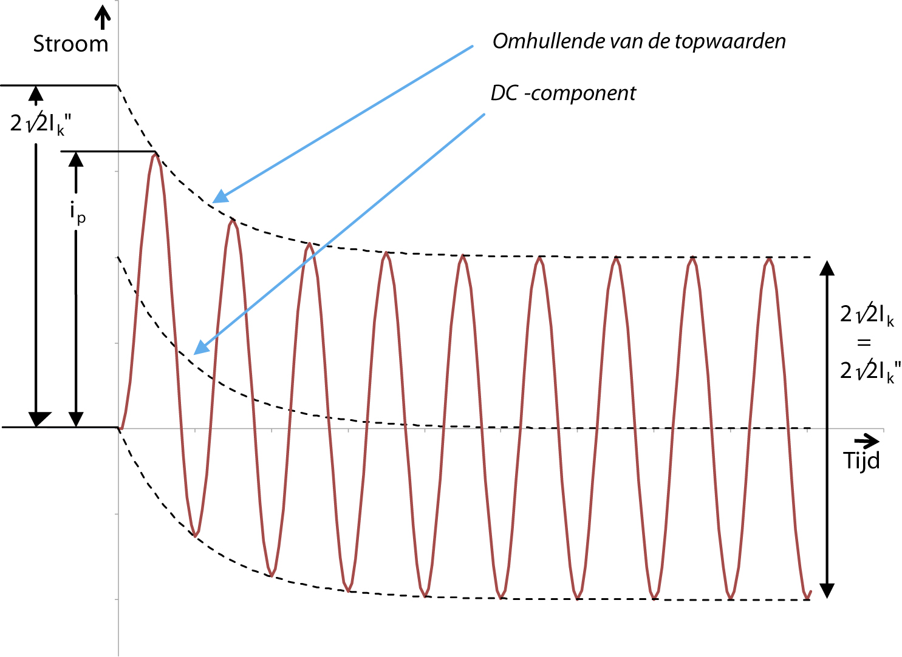De effectieve waarde van de kortsluitstroom direct na het begin van de kortsluiting is de beginkortsluitstroom Ik". De beginkortsluitstroom is de basis voor alle andere grootheden die een rol spelen bij de berekening van de kortsluitbelasting. In het voorbeeld van figuur 10.2 is de top-topwaarde van de kortsluitstroom, bepaald door de onderlinge afstand van de lijnen die de positieve toppen en de negatieve toppen van de sinusvormige wisselstroom met elkaar verbinden, constant. De afstand van de omhullende lijnen ten opzichte van elkaar is gelijk aan 2√2 ⋅ Ik".
Er is sprake van een exponentieel uitdempende gelijkstroomcomponent, die in figuur 10.2 is aangegeven met de middelste gestreepte lijn. De waarde ervan is gelijk aan de gemiddelde waarde van de kortsluitstroom. De gelijkstroomcomponent zorgt voor een hoge eerste piek in de kortsluitstroom. De hoogte ervan hangt af van de locatie van de kortsluiting in het net. Figuur 10.3 geeft het verloop weer van de stroom tijdens een driefasenkortsluiting die elektrisch gezien dicht bij een generator plaatsvindt. Bij het vergelijken van deze figuur met figuur 10.2 valt op dat het wisselstroomdeel tussen de omhullende lijnen in figuur 10.2 een constante amplitude heeft maar in figuur 10.3 een afnemende amplitude. Dit verschil wordt veroorzaakt doordat een generator, die zich dicht bij de kortsluiting bevindt, een relatief grote invloed op de kortsluitstroom heeft. De impedantie van de generator neemt bij het genereren van zijn bijdrage aan de kortsluitstroom in de tijd toe, waardoor als gevolg hiervan de kortsluitstroombijdrage van deze generator afneemt.
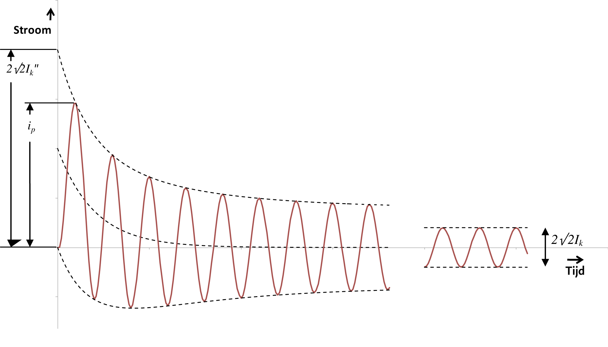Na verloop van tijd zal het overgangsverschijnsel in de kortsluitstroom zijn weggedempt en vloeit de stationaire kortsluitstroom Ik. Bij een kortsluiting ver van de generatoren neemt de effectieve waarde van de kortsluitstroom niet of nauwelijks af, zodat de stationaire kortsluitstroom gelijk verondersteld wordt aan de beginkortsluitstroom: Ik = Ik".
De norm IEC 60909 hanteert de begrippen 'ver van generator' en 'dichtbij generator' als twee uitersten. In het eerste geval wordt de bijdrage van synchrone generatoren aan de kortsluitstroom in rekening gebracht en in het tweede geval niet. Volgens IEC 60909 geldt voor een kortsluiting 'ver van generator':
In dit geval van een kortsluiting 'ver van generator' bestaat de kortsluitstroom uit de som van de volgende twee componenten:
De norm IEC 60909 definieert een kortsluiting 'dichtbij generator' als volgt:
In het geval van een kortsluiting 'dichtbij generator' bestaat de kortsluitstroom uit de som van de volgende twee componenten:
In distributienetten zijn vooralsnog de meeste kortsluitingen van het type 'ver van generator'. Is er in het net sprake van grote motoren en decentrale opwekking, dan moet gerekend worden met de methode voor een kortsluiting 'dichtbij generator'.
Bij elke kortsluiting is er sprake van een symmetrisch wisselstroomdeel. De effectieve waarde daarvan bij het begin van de kortsluiting wordt de beginkortsluitstroom of sub-transiënte kortsluitstroom Ik" genoemd. Deze grootheid is de basis voor alle andere grootheden die een rol spelen in de berekening van de kortsluitbelasting. Met behulp van de nominale gekoppelde spanning Unom wordt het schijnbare beginkortsluitvermogen Sk" berekend:
[ |
10.1 |
] |
Het kortsluitvermogen is een fictieve grootheid die vaak in plaats van Ik" wordt gebruikt. In de meeste gevallen is alleen de maximale waarde van Ik" van belang. Voor beveiligingsvraagstukken moet ook de minimale waarde bekend zijn.
De gelijkstroomcomponent (DC-component) is de gemiddelde waarde van de kortsluitstroom. Deze neemt in de tijd af, van een initiële waarde, bepaald aan het begin van de kortsluiting, naar nul. De maximale gelijkstroomcomponent wordt berekend met formule 10.2, waarin de frequentie en de R/X verhouding in de kortsluitbaan zijn opgenomen.
[ |
10.2 |
] |
De stootkortsluitstroom of de piekstroom ip vertegenwoordigt de hoogste topwaarde van de kortsluitstroom, met inbegrip van een eventueel gelijkstroomdeel. Deze grootheid wordt gebruikt bij het bepalen van de dynamische kortsluitbelasting. De maximale stroombelasting van een schakel- en verdeelinrichting is door de fabrikant gespecificeerd. De in de installatie mogelijk optredende stootkortsluitstroom moet onder de door de fabrikant opgegeven waarde liggen. De relatie tussen de stootkortsluitstroom ip en de beginkortsluitstroom Ik" luidt:
[ |
10.3 |
] |
De stootfactor κ in uitdrukking 10.3 is afhankelijk van de R/X verhouding in de kortsluitbaan en kan berekend worden met formule 10.4. Figuur 10.4 geeft de relatie κ = f(R/X) grafisch weer.
[ |
10.4 |
] |
Als alleen de beginkortsluitstroom Ik" bekend is en niet de R/X verhouding, kan voor de stootfactor de waarde 1,8 worden genomen. Dit is conservatief omdat een hoge R/X verhouding alleen geldt voor kortsluitingen in de nabijheid van voedingen. In de regel is de stootfactor in MS-distributienetten lager.
Meestal wordt ip berekend met behulp van de driefasenkortsluitstroom Ik"3. Bij asymmetrische kortsluitingen kan dezelfde waarde voor κ worden gebruikt. De resultaten zijn dan aan de veilige kant.
De verhouding R/X volgt in het meest eenvoudige geval van een radiaal bedreven net rechtstreeks uit de som van de afzonderlijke R en X waarden. Is het netwerk vermaasd, dan geeft IEC 60909 drie methoden om de stootkortsluitstroom te berekenen. In methode b van de betreffende IEC norm wordt een factor κ(b)gevonden uit de verhouding R/X van de kortsluitimpedantie op de foutplaats. De waarde van ip volgt dan uit formule 10.5. Hierin stelt de factor 1,15 een correctie voor op verschillende R/X verhoudingen in het netwerk.
[ |
10.5 |
] |
Vanaf het moment van kortsluiting tot aan het begin van afschakeling (eerste schakelaarpool) zal de waarde van de kortsluitstroom afnemen. De effectieve waarde op het moment van afschakeling wordt de uitschakelwisselstroom Ib genoemd. De norm IEC 60909 beschrijft de methode om de uitschakelwisselstroom te berekenen voor uitschakeling op 20, 50, 100 en 250 ms na het begin van de kortsluiting.
Na verloop van tijd zal het overgangsverschijnsel in de kortsluitstroom zijn weggedempt en resteert de stationaire kortsluitstroom Ik. Hierbij wordt er van uitgegaan dat motoren niet meer bijdragen en dat de rotoren van de generatoren in verzadiging zijn, waardoor zij minder bijdragen dan in het begin van de kortsluiting.
Deze grootheid wordt berekend om de thermische kortsluitvastheid van netcomponenten te kunnen bepalen.
Een kortsluitstroom heeft in de regel een afnemend gelijkstroom- en wisselstroomdeel en neemt daardoor in sterkte af. Om het thermische effect van de kortsluitstroom eenvoudig te kunnen bepalen, wordt uitgegaan van de thermische korte-duurstroom ith. Dit is een constante effectieve waarde die dezelfde thermische uitwerking en dezelfde tijdsduur heeft als de werkelijke kortsluitstroom.
Het verband tussen de thermische korte-duurstroom ith en de beginkortsluitstroom Ik" is weergegeven in formule 10.6.
[ |
10.6 |
] |
met:
| m | correctiefactor voor de gelijkstroomcomponent, die afhankelijk is van de uitschakeltijd en de stootfactor κ |
| n | correctiefactor voor de afnemende wisselstroomcomponent, die afhankelijk is van uitschakeltijd en de verhouding Ik"/ Ik. |
De factoren m en n vertegenwoordigen de thermische werking van het gelijkstroomdeel, respectievelijk het wisselstroomdeel van de kortsluitstroom. Deze zijn beschreven in de norm IEC 60909. Figuur 10.5 toont de factor m als een functie van de kortsluittijd Tk. voor diverse waarden van de stootfactor κ, variërend van 1,1 tot 1,95. In figuur 10.5 is goed zichtbaar dat de factor m voor netten met een kleine stootfactor snel klein wordt bij toenemende kortsluitduur.
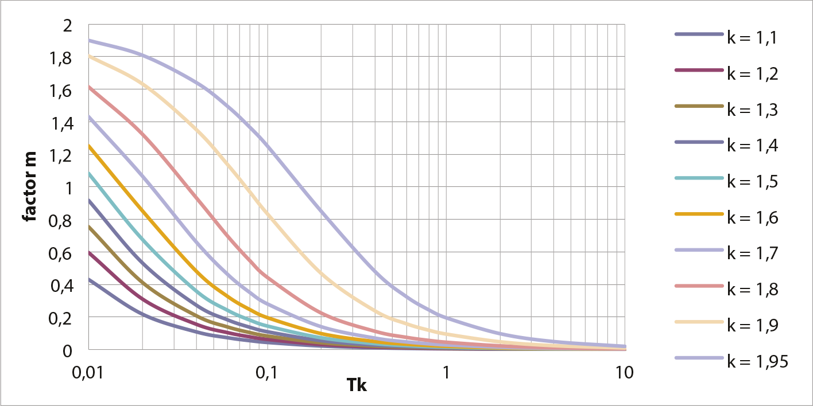Figuur 10.6 toont de factor n als een functie van de kortsluittijd Tk. voor diverse waarden van de verhouding van de beginkortsluitstroom Ik" en de stationaire kortsluitstroom Ik, variërend van 1,25 tot 10. Indien Ik gelijk is aan Ik", mag volgens IEC 60909 worden aangenomen dat de factor n gelijk is aan 1. In de figuur is goed zichtbaar dat de factor n voor netten met een kleine verhouding van Ik" en Ik langzaam klein wordt bij toenemende kortsluitduur.
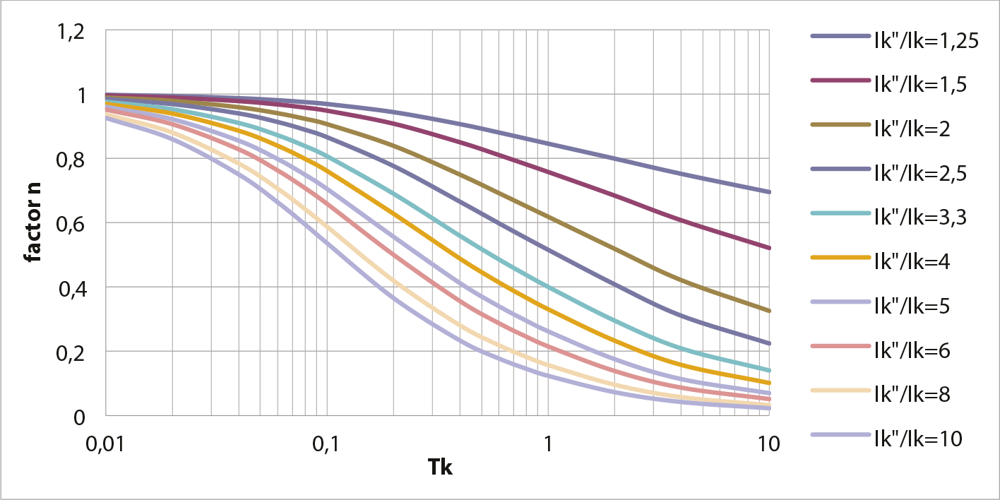In distributienetten, waar wordt aangenomen dat weinig machines aangesloten zijn, mag volgens de norm een waarde van n = 1 worden gebruikt. Ook vermeldt de norm dat voor kortsluitingen ver van de generator, waarbij de duur van de kortsluiting gemiddeld 0,5 s of meer bedraagt, het is toegestaan uit te gaan van m+n = 1, zodat ith gelijk is aan Ik".
Samenvattend zijn in de ontwerpfase van een distributienet twee aspecten van groot belang:
De kortsluitstroomberekening volgens IEC 60909 is in beginsel gedefinieerd als een methode die met de hand moet kunnen worden uitgevoerd. Bovendien heeft men ernaar gestreefd de methode zodanig in te richten dat er zo weinig mogelijk punten voor discussie zijn. De berekeningsresultaten kunnen eenvoudig door derden worden beoordeeld en gereproduceerd. Omdat met name in de industrie veel ontwerpers moeten refereren aan een internationaal erkende standaard, heeft de methode volgens IEC 60909 vaak de voorkeur. Om die reden zijn op verantwoorde wijze aannames en verwaarlozingen ingebouwd die deels met correctiefactoren worden goedgemaakt.
De methode volgens IEC 60909 is een worst-case benadering waarmee de hoogste waarde van de kortsluitstroom wordt bepaald. Hierbij wordt uitgegaan van een aantal verwaarlozingen en uitgangspunten bij het opstellen van het netmodel voor de berekening:
De voornoemde uitgangspunten en verwaarlozingen leiden tot een passief model van het net zonder voedingsbronnen. Alle netvoedingen, synchrone en asynchrone machines zijn vervangen door hun interne impedanties. In dit passieve net wordt op de kortsluitplaats een equivalente spanningsbron geplaatst, zoals aangegeven in figuur 10.7 en figuur 10.8. De hoogte van de spanning is:
[ |
10.7 |
] |
De correctiefactor c is geïntroduceerd vanwege een aantal verwaarlozingen en aannames en om afwijkingen van de ideale situatie te ondervangen, zoals:
De spanningsfactor c is afhankelijk van het spanningsniveau en van de keuze of de minimale kortsluitstroom Ik,min (factor cmin) of de maximale kortsluitstroom Ik,max (factor cmax) moet worden berekend. In tabel 10.1 zijn de waarden voor de corresponderende c-factor aangegeven.
Spanningsniveau |
Spanning |
cmax |
cmin |
LS |
Spanningstolerantie +6% |
1,05 |
0,95 |
Spanningstolerantie +10% |
1,10 |
0,95 |
|
MS |
1 kV < Unom ≤ 35 kV |
1,10 |
1,00 |
HS |
Unom > 35 kV |
1,10 |
1,00 |
De stromen in het passieve netwerk, die als gevolg van het aanbrengen van de spanningsbron ontstaan, zijn gelijk aan de foutstromen in het netwerk terwijl de totale stroom die door de spanningsbron wordt geleverd gelijk is aan de kortsluitstroom op de foutplaats.
In figuur 10.7 is een eenvoudig netwerk weergegeven dat bestaat uit drie knooppunten. Knooppunt K1 is verbonden met de netvoeding en knooppunt K3 bevat een belasting, een generator en een motor. Op knooppunt K2 wordt een symmetrische kortsluiting verondersteld.
Volgens IEC 60909 kan voor de berekening van de kortsluitstroom het netwerk worden vervangen door het vervangingsschema, zoals weergegeven in figuur 10.8. De netvoeding is vervangen door de kortsluitimpedantie. De spanningsbron van de netvoeding wordt hierbij kortgesloten. De transformator en de kabel zijn vervangen door hun impedanties. De roterende machines zijn vervangen door hun kortsluitimpedanties. Belastingen en shunts worden buiten beschouwing gelaten. Capaciteiten van verbindingen van het normale en inverse systeem worden ook buiten beschouwing gelaten.
Op de foutplaats K2 wordt nu een spanningsbron aangebracht met een waarde volgens vergelijking 10.7. Deze waarde representeert de spanning op dit knooppunt in de ongestoorde situatie. Door het netwerk van figuur 10.8 te vereenvoudigen kan de kortsluitstroom worden berekend.
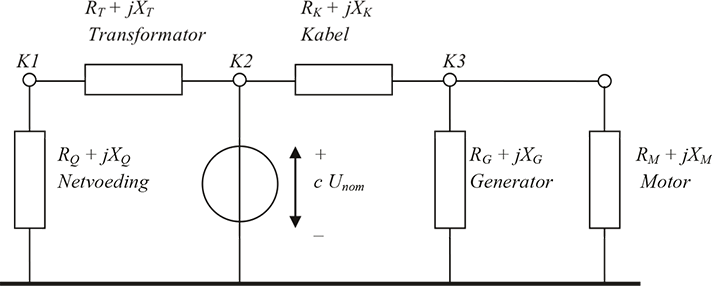Omdat de fout een driefasensymmetrische kortsluiting betreft, is voor de berekening alleen het netwerk van de normale component van belang. Hierom volstaat het alleen de normale impedanties Z1 vast te stellen. Voor de berekening van andere typen kortsluitingen, zoals tussen twee fasen en tussen fase en aarde, moeten ook de homopolaire impedantie Z0 en de inverse impedantie Z2 worden vastgesteld. In het homopolaire netwerk behoeft het vervangingsschema van de transformator bijzondere aandacht, zoals behandeld in paragraaf 8.3.6.
Door het vervangingsschema van figuur 10.8 te vereenvoudigen tot een enkele impedantie Z1, kan de driefasenkortsluitstroom Ik" eenvoudig bepaald worden uit de serie- en parallelschakeling van de afzonderlijke impedanties:
[ |
10.8 |
] |
Alle takken (transformatoren, kabels, smoorspoelen) en actieve elementen (netvoeding, generatoren, motoren) zijn vervangen door kortsluitimpedanties R+jX. De impedanties zijn beschreven in hoofdstuk 8 (Modellen). Tabel 10.2 geeft een samenvatting van de wijze waarop de impedanties van de belangrijkste netcomponenten vanuit algemeen bekende gegevens kunnen worden berekend.
De berekening van de maximum en minimum kortsluitstroom is gebaseerd op een aantal vereenvoudigingen:
Met deze vereenvoudigingen kan de kortsluitstroom met voldoende nauwkeurigheid berekend worden. De methode is vastgelegd in de norm IEC 60909 en is wereldwijd geaccepteerd.
Component |
Weerstand en reactantie |
Complexe impedantie en correctiefactor |
Netvoeding |
||
Kabels en lijnen |
 |
|
Transformatoren |
||
Smoorspoelen |
||
Synchrone generatoren en motoren |
||
Asynchrone motoren |
 |
De maximale kortsluitstroom wordt berekend om de kortsluitvastheid van de netcomponenten te onderzoeken. Bij de berekening van maximale kortsluitstromen in een netwerk wordt een factor cmax gebruikt. Bij deze berekening wordt uitgegaan van:
Deze berekening wordt toegepast om de juiste werking van beveiligingstoestellen in het net te onderzoeken, met name voor het al dan niet aanspreken van de beveiliging en het vaststellen van selectiviteit tussen opeenvolgende beveiligingstoestellen. Bij de berekening van minimale kortsluitstromen in een netwerk wordt een factor cmin gebruikt. Voor de berekening wordt uitgegaan van:
Het beveiligingssysteem moet ontworpen zijn voor het afschakelen van kortsluitstromen en aardfoutstromen. Het is belangrijk alert te zijn op het grijze gebied tussen de maximaal toelaatbare stroom van de beveiligde objecten en het aanspreekniveau van de beveiliging, met name in verband met de aanloopstromen van grote motoren.
In elk elektriciteitsnet kunnen op verschillende manieren kortsluitingen optreden. Hierbij wordt onderscheid gemaakt in: kortsluiting tussen 3 fasen, kortsluitingen tussen 2 fasen, al dan niet met aardcontact en kortsluitingen tussen een fase en aarde. Bij het berekenen wordt gebruik gemaakt van de methode van symmetrische componenten (hoofdstuk 7). Met deze methode kan de kortsluitstroom voor de situaties uit figuur 10.9 met behulp van eenvoudige formules worden berekend. Voor het bepalen van de impedanties van de componenten in het netwerk wordt gebruik gemaakt van de modellen, zoals beschreven in hoofdstuk 8.
De basis voor de kortsluitstroomberekeningen wordt gelegd door de samenschakelingen van de symmetrische componentnetwerken (Happoldt, 1978). Voor elke symmetrische component wordt een model gemaakt van het netwerk, waarna het type kortsluiting bepaalt op welke manier de normale, inverse en homopolaire componentnetwerken met elkaar worden verbonden. De fasestromen en fasespanningen kunnen na de terugtransformatie (zie hoofdstuk 7) uit de componentstromen en componentspanningen worden berekend. De schakelingen voor de vier kortsluittypen zijn samengevat in figuur 10.10. Hierin zijn Zk,1, Zk,2 en Zk,0 de kortsluitimpedantie van respectievelijk het normale, inverse en homopolaire netwerk op de foutplaats en is Zf de impedantie van de kortsluiting. De spanningsbron in de componentnetwerken is de nominale fasespanning.
Bij kortsluitberekeningen volgens IEC 60909 is de impedantie van de kortsluiting Zf altijd nul Ohm en worden niet de component-stromen I1, I2 en I0 berekend, maar de kortsluitstroom Ik op de foutplaats, waardoor de waarde van de spanningsbron de nominale gekoppelde spanning is, vermenigvuldigd met de c-factor.
Voor symmetrische kortsluitingen blijkt alleen de normale impedantie (Z1) van belang. Voor asymmetrische kortsluitingen moet ook de inverse impedantie (Z2) worden bepaald. Deze wordt in de meeste gevallen (ver van generator) gelijk verondersteld aan de normale impedantie (Z1 = Z2). Indien de kortsluiting tussen een of twee fasen en aarde plaatsvindt, moet ook de homopolaire impedantie (Z0) worden bepaald.
Uit de symmetrische componentschakelingen van figuur 10.10 zijn de formules voor de kortsluitstroomberekeningen van IEC 60909 afgeleid. Hierin wordt niet met componentstromen en met de fasespanning gewerkt, maar met de gekoppelde spanning en de fasestromen. Tabel 10.3 geeft een overzicht van de berekening van de kortsluitstromen volgens IEC 60909. Hierin is Unom de nominale gekoppelde spanning op de foutplaats en is Zk,1 de kortsluitimpedantie op de foutplaats in het normale systeem, Zk,2 de kortsluitimpedantie op de foutplaats in het inverse systeem en Zk,0 de kortsluitimpedantie op de foutplaats in het homopolaire systeem. Voor een tweefasenkortsluiting met aardcontact worden de complexe operators a en a2 (zie paragraaf 7.5) gebruikt.
Type kortsluiting |
Kortsluitstroom |
Drie fasen |
|
Twee fasen zonder aardcontact |
|
Twee fasen (b en c) met aardcontact |
|
Een fase met aardcontact |
De driefasenkortsluiting levert in bijna alle gevallen de grootste kortsluitstroom. In een enkel geval levert de fase-aardkortsluiting de grootste kortsluitstroom. De grootte hangt af van de manier van aarden in het MS- en het LS-net. Veel MS-netten zijn zwevend, waardoor de fase-aardkortsluitstroom vooral bepaald wordt door de capaciteit naar aarde van alle gekoppelde kabels in het MS-net (zie hoofdstuk 5). Indien de homopolaire impedantie Z0 op de kortsluitplaats kleiner is dan Z1 en Z2, zal de fase-aardkortsluitstroom groter zijn dan de driefasenkortsluitstroom. Deze situatie kan optreden bij een kortsluiting aan de LS-klemmen van een distributietransformator. De tweefasenkortsluiting is minder van belang in de ontwerpfase en wordt dan ook niet zo vaak uitgevoerd.
Het net van figuur 10.7 wordt hieronder herhaald in figuur 10.11. In het net van figuur 10.11 worden hieronder aan de hand van een voorbeeld de berekeningen van de maximale kortsluitstroom toegelicht voor een kortsluiting op het MS-knooppunt K2. Het MS-deel is niet geaard. De gegevens van het netwerk en de componenten zijn in tabel 10.4 samengevat.
Knooppunten:
|
Netvoeding:
|
Transformator:
|
||||||||||||||||||||||||||||||||||||||
Kabel:
|
Motor:
|
Generator:
|
||||||||||||||||||||||||||||||||||||||
Belasting:
|
Het vervangingsschema van figuur 10.8 wordt hieronder herhaald in figuur 10.12.
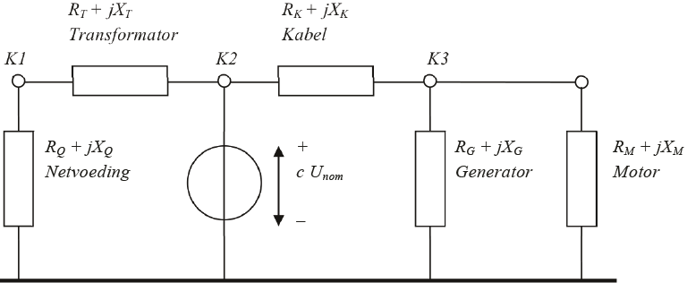Voor de berekening van de driefasenkortsluitstroom in het vervangingsschema van figuur 10.12 worden eerst de interne impedanties van alle componenten berekend. Hierbij worden alle impedanties betrokken op het spanningsniveau van de kortsluitplaats. Voor de netvoeding geldt aan HS-zijde:
[ |
10.9 |
] |
Omdat de kortsluiting zich op het MS-knooppunt K2 bevindt, moet de impedantie van de HS-netvoeding worden omgerekend naar een equivalente impedantie op MS-niveau. Dit gebeurt met behulp van de overzetverhouding van de transformator. Voor de netvoeding geldt dan, gecorrigeerd voor de overzetverhouding van de transformator:
[ |
10.10 |
] |
Voor de transformator geldt:
[ |
10.11 |
] |
Voor de kabel geldt:
[ |
10.12 |
] |
Voor de generator geldt:
[ |
10.13 |
] |
Voor de motor geldt:
[ |
10.14 |
] |
In het vervangingsschema van figuur 10.12 is de impedantie links van knooppunt K2 en dus links van de spanningsbron gelijk aan de serieschakeling van de impedanties van de netvoeding en de transformator:
[ |
10.15 |
] |
In het vervangingsschema van figuur 10.12 is de impedantie rechts van de spanningsbron gelijk aan de serieschakeling van de kabelimpedantie en de parallelschakeling van de generator- en motorimpedantie. De impedantie van de belasting wordt verwaarloosd:
[ |
10.16 |
] |
De totale impedantie op de foutplaats is dan gelijk aan de parallelschakeling van de impedanties links en rechts van de spanningsbron:
[ |
10.17 |
] |
Nu kan de driefasenkortsluitstroom op foutplaats K2 worden berekend:
[ |
10.18 |
] |
De bijdrage vanuit de voedende kant, links van de spanningsbron in figuur 10.12 is gelijk aan:
[ |
10.19 |
] |
Dit is de kortsluitstroom die door de netvoeding en de transformator wordt geleverd.
De bijdrage vanuit de motor en de generator, rechts van de spanningsbron in figuur 10.12 is gelijk aan:
[ |
10.20 |
] |
Ook voor een tweefasenkortsluiting zonder aardcontact op de foutplaats K2 is de kortsluitstroom nu te bepalen, indien hierbij conform IEC 60909 de inverse impedantie gelijk gesteld wordt aan de normale impedantie (Zk,2 = Zk,1). De tweefasenkortsluitstroom op de foutplaats is dan volgens tabel 10.3:
[ |
10.21 |
] |
Op identieke wijze kan ook eenvoudig de kortsluitstroom in knooppunt K3 worden bepaald. Om dit te kunnen doen, moet de equivalente spanningsbron in figuur 10.12 verplaatst worden van knooppunt K2 naar knooppunt K3. Ten aanzien van de impedanties blijft het schema onveranderd, zoals afgebeeld in figuur 10.13.
De impedantie links van knooppunt K3 in figuur 10.13 is gelijk aan de serieschakeling van de impedanties van de netvoeding, de transformator en de kabel:
[ |
10.22 |
] |
In het schema van figuur 10.13 is de impedantie rechts van de spanningsbron op knooppunt K3 gelijk aan de parallelschakeling van de generator- en motorimpedantie. De impedantie van de belasting wordt weer verwaarloosd:
[ |
10.23 |
] |
De totale impedantie op de foutplaats K3 is dan gelijk aan de parallelschakeling van de impedanties links en rechts van de spanningsbron:
[ |
10.24 |
] |
Hiermee kan nu de driefasenkortsluitstroom op foutplaats K3 worden berekend:
[ |
10.25 |
] |
Het kortsluitvermogen op foutplaats K3 wordt berekend met de nominale spanning:
[ |
10.26 |
] |
De R/X-verhouding op foutplaats K3 wordt afgeleid van de impedantie op de foutplaats (vergelijking 10.24) en is gelijk aan:
[ |
10.27 |
] |
Met de R/X-verhouding en de driefasenkortsluitstroom kan de stootkortsluitstroom worden berekend met behulp van de formules 10.3 en 10.4:
[ |
10.28 |
] |
Het netwerk van figuur 10.11 is volgens de gegevens in tabel 10.4 een MS-net. De HS/MS-transformator heeft een ster-driehoekschakeling en daarmee is het netwerk een zwevend MS-net. In een zwevend net wordt de fase-aardkortsluitstroom voor het grootste gedeelte bepaald door de capaciteit naar aarde van alle kabels. Voor het berekenen van de fase-aardkortsluitstroom moet de homopolaire impedantie Z0 van het net op de kortsluitplaats worden bepaald. De te gebruiken gegevens zijn te vinden in figuur 10.9.d en in figuur 10.10.d. In het schema van het net in het homopolaire stelsel wijken de vervangingsschema's van de transformatoren en roterende machines af van het schema in het normale stelsel. De afwijkingen leiden in het voorbeeld tot het circuit van figuur 10.14. Hierin valt op dat de transformator, door de driehoekschakeling aan de secundaire zijde, geen verbinding vormt met de hoogspanningszijde (zie ook hoofdstuk 8). Bovendien hebben de motor en de generator geen homopolaire impedantie omdat ervan wordt uitgegaan dat de wikkelingen in driehoek zijn geschakeld. De kabel wordt voorgesteld met een Pi-equivalent voor de homopolaire capaciteit (twee maal jXk0,dwars/2) en de homopolaire langsimpedantie (Rk,0+jXk,0).
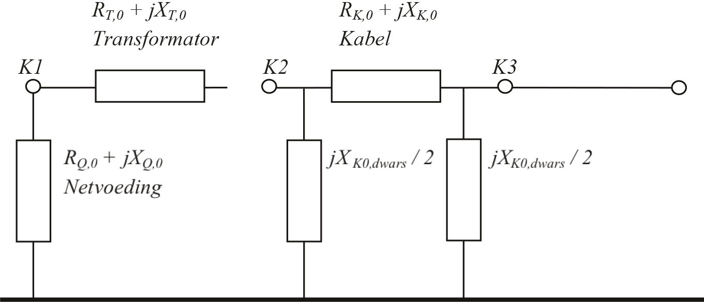Omdat Zk,0 veel kleiner is dan Zk0,dwars, kan het homopolaire Pi-equivalent van de kabel worden vereenvoudigd tot een enkele dwarsimpedantie Zk0,dwars. De waarde hiervan wordt berekend uit de homopolaire capaciteit:
[ |
10.29 |
] |
Dit is de enige homopolaire impedantie op foutplaats K2, zodat deze waarde kan worden ingevuld in de formule voor de fase-aardkortsluitstroom uit tabel 10.3 (Zk,1 = Zk,2):
[ |
10.30 |
] |
Het net van figuur 10.7 heeft maar een klein MS-gedeelte. De meeste MS-netten worden gevoed via een voedingsstation, waarop zo'n 20 strengen zijn aangesloten die elk gemakkelijk een lengte van 10 km kunnen hebben. Figuur 10.15 toont een net, waarbij de 20 strengen zijn gerepresenteerd door een equivalente verbinding.
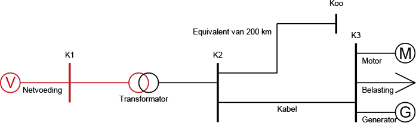Volgens hoofdstuk 5 hebben alle aangesloten strengen een gezamenlijke grote homopolaire capaciteit naar aarde, die ervoor zorgt dat de fase-aardkortsluitstroom een aanzienlijke grootte kan bereiken. Figuur 10.16 illustreert dit aan de hand van de paden voor de kortsluitstromen.
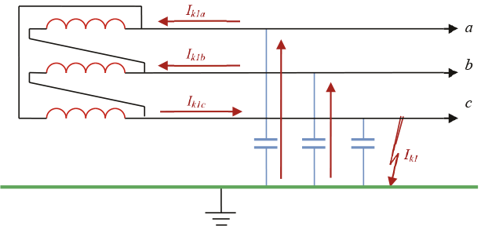De gezamenlijke homopolaire capaciteit CK,0 van 200 km kabel van het type 3x150 Cu XLPE 6/10 is 72 μF. Deze capaciteit is opgenomen in de extra equivalente verbinding in figuur 10.15. De fase-aardkortsluitstroom Ik1 is afgebeeld in figuur 10.16 en bestaat uit de twee stromen Ik1a en Ik1b door de twee capaciteiten van de fasen a en b. De spanning over elk van deze capaciteiten is tijdens de kortsluiting gelijk aan de gekoppelde spanning. De laadstroom die door elke fase door de aanwezige capaciteit loopt, bedraagt:
[ |
10.31 |
] |
Hierdoor is de stroom door de equivalente condensatoren ook gelijk aan 0,238 kA. Deze stromen vloeien door de fasen a en b naar de transformator en de vectoriële som van deze twee stromen (Ik1c) vloeit door de fase c naar de kortsluitplaats. Door de waarde van XC,0 in te vullen in vergelijking 10.29 kan de kortsluitstroom worden berekend, want Ik1 = Ik1c :
[ |
10.32 |
] |
Wordt deze waarde ingevuld in de formule voor de fase-aardkortsluitstroom uit tabel 10.3 (Zk,1 = Zk,2 en Z k,0 = ZK0,dwars), dan volgt:
[ |
10.33 |
] |
Deze vrij grote fase-aardkortsluitstroom in het zwevende net is in de orde grootte van de maximale stroombelasting van de toegepaste kabel en zal, afhankelijk van de toegepaste beveiliging, worden afgeschakeld. Indien de hoogte van de fase-aardkortsluitstroom niet leidt tot ontoelaatbare opwarming van de geleider of het aardscherm van de kabels, dan hoeft de kortsluiting niet onmiddellijk afgeschakeld te worden. Er is dan sprake van een 'staande aardfout'. De energielevering hoeft nu niet te worden onderbroken. In alle rust kan de aardsluiting worden gelokaliseerd. Het is altijd wel wenselijk een aardsluiting te detecteren vanwege de kans op een tweede aardfout in de gezonde fasen. De op het LS-net aangesloten klanten merken in de fase-nulspanningen niets van de kortsluiting in het MS-net. Er kan eventueel een stijging van de potentiaal van de nul en de PE optreden (zie paragraaf 5.7.3).
In een zwevend MS-distributienet wordt de fase-aardkortsluitstroom veroorzaakt door de homopolaire capaciteit van alle kabels achter de voedingstransformator. Deze kortsluitstroom kan bij een groot net aanzienlijk worden. Door inzet van een blusspoel kan de grootte van deze kortsluitstroom beperkt worden. De werking berust op het principe van parallelresonantie tussen de totale homopolaire kabelcapaciteit en de homopolaire inductie van de blusspoel, waardoor de impedantie van het homopolaire componentnetwerk oneindig groot wordt.
Figuur 10.17 toont een netwerk waar de blusspoel is aangebracht als een nulpunttransformator met een homopolaire impedantie naar aarde. De homopolaire reactantie is gelijk aan de som van de homopolaire transformatorimpedantie plus drie maal de aardingsimpedantie. De blusspoel kan ook worden gerealiseerd met een ster-driehoektransformator, waarvan het sterpunt met een impedantie is geaard.
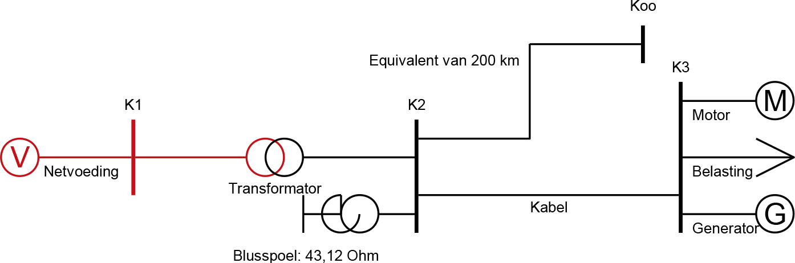Voor de berekening van de fase-aardkortsluitstroom wordt het vervangingsschema van figuur 10.10.d voor de kortsluiting in één fase met aardcontact toegepast, waarbij de drie componentnetwerken (normaal, invers, homopolair) in serie worden geschakeld. Het homopolaire netwerk is afgebeeld in figuur 10.18. Om parallelresonantie te verkrijgen moet in het homopolaire deelnetwerk de totale impedantie van knooppuntje K3 naar de referentie oneindig groot zijn. Dit kan bereikt worden door de waarde van XBS,0 van de blusspoel juist te kiezen. Dit heeft tevens tot gevolg dat bij een configuratiewijziging van het net de capaciteit verandert en dus ook de resonantiefrequentie. Om alsnog weer resonantie te kunnen verkrijgen, zou theoretisch de waarde van de blusspoel aangepast moeten worden.

De waarde van ZK,0,dwars is berekend in vergelijking 10.29:
|
|
|
De waarde van ZC voor de equivalente verbinding, die 200 km kabel representeert, is berekend in vergelijking 10.32:
|
|
|
De totale homopolaire impedantie, veroorzaakt door de homopolaire capaciteiten van de kabels, is dan gelijk aan de parallelschakeling van deze twee impedanties:
|
|
|
Voor parallelresonantie moet de homopolaire reactantie van de blusspoel gelijk zijn aan de negatieve homopolaire reactantie van de homopolaire capaciteiten:
 |
[ |
10.34 |
] |
De parallelschakeling van de blusspoel met de kabels levert een waarde van Zk,0 die oneindig is. Deze waarde kan worden ingevuld in de formule voor de fase-aardkortsluitstroom uit tabel 10.3, waarbij als resultaat de grootte van Ik1" nul is. Figuur 10.19 toont het resultaat van de kortsluitstroomberekening voor deze foutsituatie. Hierbij worden alle stromen rond het kortsluitpunt in het met de blusspoel geaarde net getoond. Op de plaats van de kortsluiting is de kortsluitstroom nul. Er loopt echter wel een homopolaire stroom van de kabels (138 plus 3 A) naar de blusspoel. Dit is het gevolg van de parallelresonantie in het homopolaire circuit. Er loopt bovendien een stroom in het normale circuit van de voedingstransformator (138 A) naar de equivalente kabel en naar de kabel die naar knooppunt K3 loopt. De stroom naar de equivalente kabel (138 A) is de capacitieve laadstroom van alle kabelcapaciteiten (totaal 72 μF, gelijk aan de homopolaire capaciteit) in het normale circuit. De stroom naar de kabel die naar K3 loopt (164 A) is de normale inductieve loadflowstroom naar de belastingen en de generator, die op knooppunt K3 zijn aangesloten. Deze stromen vloeien in het normale circuit en worden niet door de kortsluiting beïnvloed.
Soms is het gewenst dat fase-aardfouten in zwevende MS-distributienetten niet blijven staan maar direct worden afgeschakeld. Het netwerk van figuur 10.7 kan op twee manieren geaard worden. In sommige 50/10 kV onderstations komt het voor dat transformatoren van het type Dyn zijn toegepast. In die gevallen kan het sterpunt van de 10 kV-zijde star of via een impedantie geaard worden, waardoor de fase-aardkortsluitstroom in het MS-net groot kan worden. Waarden van 8 kA kunnen dan bereikt worden. Een andere manier van aarden, die veelvuldig wordt toegepast, maakt gebruik van een nulpunts- of aardingstransformator (zie hoofdstuk 8). Figuur 10.20 geeft een voorbeeld van een aardingstransformator, die is opgesteld in het onderstation.
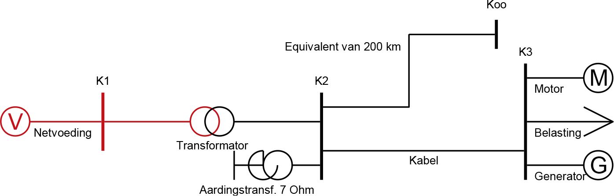De fase-aardkortsluitstroom wordt nu voor het grootste gedeelte bepaald door de impedantie van de aardingstransformator en daarbij de capaciteit naar aarde van alle kabels. Voor het berekenen van de fase-aardkortsluitstroom moet het homopolaire circuit van figuur 10.21 worden gebruikt. Hierin is de aardingstransformator gemodelleerd als een homopolaire impedantie op knooppunt K2. De homopolaire impedantie van de aardingstransformator is 7 Ω (reactief). De homopolaire impedantie van de equivalente kabel wordt voorgesteld door een enkele homopolaire impedantie op knooppunt K2. De homopolaire impedantie van de kabel wordt voorgesteld met een Pi-equivalent voor de homopolaire capaciteit (twee maal j2Xk0,dwars) en de homopolaire langsimpedantie (Rk,0+jXk,0). De homopolaire langsimpedantie van de kabel wordt in deze berekening weer verwaarloosd.
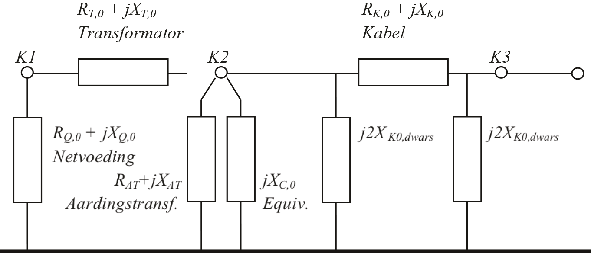De waarde van ZK,0,dwars is berekend in vergelijking 10.29:
De waarde van ZC voor de equivalente verbinding, die 200 km kabel representeert, is berekend in vergelijking 10.32:
De homopolaire impedantie van de aardingstransformator is gegeven en bedraagt:
[ |
10.35 |
] |
De totale homopolaire impedantie op de foutplaats is dan gelijk aan de parallelschakeling van de drie voornoemde homopolaire impedanties:
[ |
10.36 |
] |
Deze waarde kan worden ingevuld in de formule voor de fase-aardkortsluitstroom uit tabel 10.3 (Zk,1 = Zk,2):
[ |
10.37 |
] |
Voor een correcte berekening van de kortsluitstroom in een LS-net moet in beginsel ook het bovenliggende MS-net worden gemodelleerd en in de berekening worden opgenomen. Voor de meeste toepassingen kan echter worden volstaan met de berekening vanaf de MS-zijde van de distributietransformator. In dat geval moet het kortsluitvermogen van het MS-voedingspunt bekend zijn. In deze paragraaf wordt de berekening van de kortsluitstromen toegelicht voor een een LS-net, dat gevoed wordt door een distributietransformator op knooppunt K3.
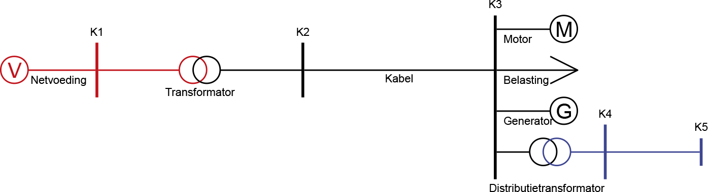In paragraaf 10.3.2 is in vergelijking 10.26 het kortsluitvermogen op knooppunt K3 berekend. De R/X-verhouding op dit knooppunt is berekend met formule 10.27. Hiermee kan het bovenliggende voedende HS- en MS-net worden vervangen door een equivalente netvoeding op knooppunt K3. Aldus ontstaat het vereenvoudigde netwerk van figuur 10.23:
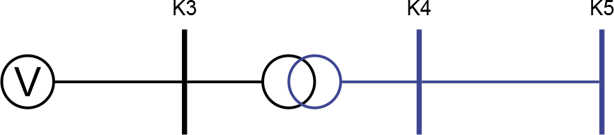In het rekenvoorbeeld wordt ervan uitgegaan dat het MS-gedeelte niet is geaard en dat het LS-gedeelte via het transformatorsterpunt is geaard met een weerstand van 2Ω. De gegevens van het netwerk en de componenten zijn in tabel 10.5 samengevat.
Knooppunten:
|
Netvoeding:
|
||||||||||||||||||||||||||||||||
Transformator:
|
Kabel:
|
Voor een kortsluitstroomberekening volgens de IEC 60909 berekening wordt het net schematisch voorgesteld met het netwerk van figuur 10.24 voor de normale component en het netwerk van figuur 10.25 voor de homopolaire component.
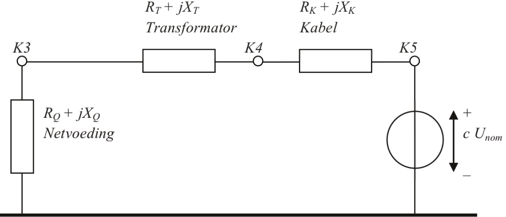Voor de berekening van de driefasenkortsluitstroom op knooppunt K5 is het laagspanningsnetwerk in figuur 10.24 weergegeven. Nu worden eerst de interne impedanties van alle componenten berekend. Hierbij worden alle impedanties betrokken op het spanningsniveau van de kortsluitplaats. Voor de impedantie van de netvoeding geldt, gecorrigeerd voor de overzetverhouding van de transformator:
[ |
10.38 |
] |
Voor de transformator geldt:
[ |
10.39 |
] |
Voor de kabel geldt:
[ |
10.40 |
] |
In het schema van figuur 10.24 is voor foutplaats K5 de impedantie, links van de spanningsbron, gelijk aan de serieschakeling van de impedanties van de netvoeding, de transformator en de kabel:
[ |
10.41 |
] |
Nu kan de driefasenkortsluitstroom op de foutplaats K5 worden berekend:
[ |
10.42 |
] |
De R/X-verhouding op de foutplaats K5 wordt afgeleid van de impedantie Zk,1 op de foutplaats (vergelijking 10.41). Uit Zk,1 = Rk,1 + jXk,1 volgt dan:
[ |
10.43 |
] |
Met de R/X-verhouding en de driefasenkortsluitstroom kan de stootkortsluitstroom op knooppunt K5 worden berekend volgens formules 10.3 en 10.4:
[ |
10.44 |
] |
Het netwerk van figuur 10.23 heeft een geaard LS-net. De fase-aardkortsluitstroom wordt bepaald door de distributietransformator, de aardverspreidingsweerstand en de kabel. Navolgend wordt er van uitgegaan dat Zk,1 = Zk,2. Voor het berekenen van de fase-aardkortsluitstroom moet het homopolaire circuit van het netwerk worden bepaald. Deze is weergegeven in figuur 10.25. Bij het vergelijken van figuur 10.25 met figuur 10.24 valt het op dat in het homopolaire circuit de transformator, door de driehoekschakeling aan de primaire zijde, geen verbinding vormt met knooppunt K3 aan de middenspanningszijde (zie ook hoofdstuk 8). De kabel wordt in beginsel voorgesteld met een Pi-equivalent voor de homopolaire capaciteit (twee maal jXk0,dwars/2) en de homopolaire langsimpedantie (Rk,0+jXk,0), zoals afgebeeld in figuur 10.14. Omdat in een laagohmig geaard LS-net de kabelcapaciteit praktisch geen rol speelt, wordt deze verwaarloosd, zodat de kabel in het homopolaire circuit wordt voorgesteld met alleen zijn homopolaire langsimpedantie.
De homopolaire impedantie van de aardverspreidingsweerstand is een factor 3 groter dan de aardverspreidingsweerstand (zie hoofdstuk 7):
[ |
10.45 |
] |
Voor een kortsluiting op knooppunt K5 is de impedantie in het homopolaire circuit gelijk aan de serieschakeling van de homopolaire impedantie van de aardverspreidingsweerstand, de homopolaire transformatorimpedantie en de homopolaire kabelimpedantie:
[ |
10.46 |
] |
Deze waarde kan worden ingevuld in de formule voor de fase-aardkortsluitstroom uit tabel 10.3:
[ |
10.47 |
] |
Zoals uit de voorgaande rekenvoorbeelden blijkt, is het effect van aardfouten afhankelijk van het gekozen aardingsconcept. Voor de drie meest toegepaste aardingsconcepten geldt:
Bij kortsluitingen oefent de kortsluitstroom een thermische en een mechanische belasting uit op de component. De component moet tegen beide belastingen bestand zijn. In deze paragraaf wordt nader ingegaan op de kortsluitvastheid. Het kortsluitvermogen van componenten wordt door de fabrikanten opgegeven. De waarde wordt vaak als maximale kortsluitstroom in kA gespecificeerd maar wordt dan toch veelal kortsluitvermogen genoemd. De maximale tijd dat een kortsluitstroom aanwezig is, wordt bepaald door de instellingen van de beveiliging in het voedende net. Deze wordt door netbeheerder bepaald. Vanuit dit gegeven kunnen de installaties van de aangeslotenen worden gedimensioneerd.
Uitgangspunt van de kortsluitvastheid is de nominale korte-duurstroom. Dit is de effectieve waarde van de grootste korte-duurstroom (door de fabrikant gespecificeerd) die de stroomketen zonder schade gedurende een gegeven tijd kan voeren. Tenzij de fabrikant anders aangeeft, bedraagt de toegestane tijdsduur van de kortsluitstroom 1 s. De gespecificeerde Ik,1s is dus de maximale grootte van de kortsluitstroom die gedurende 1 seconde mag vloeien zonder dat de betreffende component beschadigt. Het is ook mogelijk dat Ik,2s gespecificeerd is: de maximale grootte van de kortsluitstroom die gedurende 2 seconden mag vloeien.
Maatgevend voor de kortsluitbelasting zijn de beginkortsluitstroom Ik" of, als deze niet bekend is, de afschakelstroom IA van de voorliggende vermogenschakelaar en de afschakeltijd tK van de kortsluiting. Hieruit wordt de effectieve waarde van de thermische kortsluitstroom ith berekend (formule 10.6). Van alle componenten (kabels, transformatoren, smoorspoelen en schakelinstallaties) waarvoor een kortsluitberekening is uitgevoerd, is het gewenst om de maximale toelaatbare kortsluittijd tmax te berekenen aan de hand van de door de leveranciers gespecificeerde korte-duurstroom Ik,1s of Ik,2s.
Het verwarmen van de kabel tijdens een kortsluiting is een adiabatisch proces. Dat wil zeggen dat de verwarming van de geleider gedurende een zo korte tijd plaatsvindt, dat in dat tijdsbestek geen warmte-uitwisseling met de omgeving plaatsvindt. Alle warmte wordt dan in de geleider opgeslagen. Daarbij mag de geleider niet warmer worden dan een gespecificeerde waarde. Voor de meeste XLPE-kabels is dat 250 °C. Ook van belang is de initiële waarde van de temperatuur, voor aanvang van de kortsluiting. Hierbij is het gebruikelijk uit te gaan van de continu maximale temperatuur, die bij XLPE-kabels 90 °C is.
Van een specifieke kabel wordt de toelaatbare kortsluitstroom Ik als functie van de tijdsduur van deze niet veranderende stroom als volgt berekend (Heinhold, 1999):
| [kA] | [ |
10.48 |
] |
met:
| K | constante (0,095 voor aluminium en 0,143 voor koperen geleider) voor opwarming van 90 °C naar 250 °C |
| t | tijd dat de kortsluitstroom loopt (s) |
| A | geleiderdoorsnede (mm2) |
De constante K wordt berekend uit de materiaaleigenschappen en de begin- en eindtemperaturen:
[ |
10.49 |
] |
met:
| k1 | constante: 148 voor aluminium en 226 voor koperen geleider |
| k2 | temperatuurfactor, afhankelijk van materiaaleigenschappen en de begin- en eindtemperaturen |
De variabele k2 wordt berekend uit een materiaalafhankelijke temperatuurcoëfficiënt en de begin- en eindtemperaturen:
 |
[ |
10.50 |
] |
met:
| θ | constante (228 voor aluminium en 234,5 voor koperen geleider) |
| θfinal | maximaal toelaatbare kortsluittemperatuur (250 °C voor XLPE-kabel) |
| θinitial | geleidertemperatuur voor aanvang van de kortsluiting (90 °C voor XLPE-kabel) |
Figuur 10.26 toont de toelaatbare kortsluitstroom, zoals berekend met formule 10.48 voor een kabel met koperen geleider en een kabel met aluminium geleider, beide met een geleiderdoorsnede van 95 mm2 en een initiële temperatuur van 90 °C en een eindtemperatuur van 250 °C.
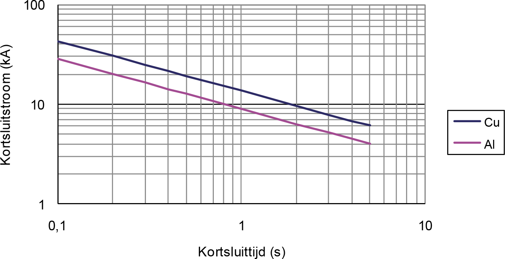Voor kabels is het gebruikelijk te werken met de toelaatbare kortsluitstroom die gedurende één seconde mag vloeien: Ik,1s. Tabel 10.6 geeft de waarde van Ik,1s voor enkele gangbare kunststof kabels. Hierbij is uitgegaan van een temperatuurverhoging van de geleider van 90 °C naar 250 °C. Voor het scherm gelden andere waarden. De waarden voor het scherm zijn belangrijk bij fase-aardfouten. Het kan namelijk zijn dat niet de geleider maar het scherm de beperkende factor is voor de kortsluitvastheid. Bij de waarden in tabel 10.6 is voor het scherm uitgegaan van een temperatuurverhoging van 50 °C naar 250 °C.
Materiaal |
Geleider |
Cu-scherm |
||
Doorsnede (mm2) |
Ik,1s (kA) |
Doorsnede (mm2) |
Ik,1s (kA) |
|
Al |
50 |
4,8 |
25 |
4,1 |
95 |
9,0 |
25 |
4,1 |
|
150 |
14,1 |
25 |
4,1 |
|
240 |
22,6 |
50 |
8,2 |
|
Cu |
50 |
7,1 |
25 |
4,1 |
95 |
13,5 |
25 |
4,1 |
|
150 |
21,4 |
25 |
4,1 |
|
240 |
34,2 |
50 |
8,2 |
|
De maximale tijd dat een berekende kortsluitstroom door een kabel mag vloeien is dan (Heinhold, 1999):
[ |
10.51 |
] |
met:
| tmax | maximaal toelaatbare kortsluittijd (s) |
| Ik,1s | toelaatbare kortsluitstroom gedurende 1 seconde (kA) |
| ith | effectieve waarde van de kortsluitstroom in de tak (kA) |
De thermische kortsluitvastheid van een transformator wordt bepaald door de stationaire kortsluitstroom en de maximaal toelaatbare thermische belasting van het isolatiemateriaal. De tijdsduur van de stationaire kortsluitstroom wordt gesteld op 2 s, tenzij de netontwerper een andere waarde kiest.
De temperatuurverhoging van de wikkelingen kan met onderstaande formule worden berekend (NEN-EN-IEC 60076-5):
[ |
10.52 |
] |
met:
| T0 | begintemperatuur (°C) |
| T1 | eindtemperatuur (°C) |
| Jk | stroomdichtheid in de wikkelingen (A/mm2) |
| tk | tijdsduur van de kortsluiting (s) |
| G | materiaalconstante (A2s/mm4); Cu: G = 101000; Al: G = 45400 |
De maximaal toegestane temperatuur is door de fabrikant gespecificeerd. Deze hangt af van het transformatortype (oliegevuld of droog) en de temperatuurklasse van de isolatie. De maximale tijd dat een berekende kortsluitstroom door een kabel mag vloeien is dan:
[ |
10.53 |
] |
met:
| tmax | maximaal toelaatbare kortsluittijd (s) |
| Ik,2s | toelaatbare kortsluitstroom gedurende 2 seconden (kA) |
| ith | effectieve waarde van de kortsluitstroom in de tak (kA) |
De afschakelstromen en doorgaande stromen waarvoor schakelmateriaal wordt gedimensioneerd, liggen vast in diverse IEC-publicaties. Voor schakelinstallaties en de componenten wordt voor de thermische korte-duurstroom een tijdsduur aangehouden van 1 s. Als hiervan afgeweken moet worden, wordt 3 s aanbevolen. Gedurende deze tijd dient het materiaal in staat te zijn de warmte en de mechanische krachten als gevolg van de toegekende kortsluitstroom te weerstaan.
De maximale amplitude van de kortsluitstroom bepaalt de mechanische belasting van de installatie. In de IEC-publicaties wordt ervan uitgegaan dat de stootkortsluitstroom 2,5 maal de effectieve waarde van de stationaire kortsluitstroom is. Voor de meeste toepassingen zal dit voldoende zijn. Dicht bij de generatoren kunnen echter grotere waarden optreden. De maximaal toelaatbare stootkortsluitstroom voor diverse soorten installaties volgt uit de normreeks.
Lastscheiders kunnen zowel enkelpolig als driepolig zijn uitgevoerd. De enkelpolige variant is het goedkoopst en wordt veruit het meest toegepast in het MS-distributienet. Bij aansluitingen met nettransformatoren met een nominaal vermogen van groter dan 1000 kVA wordt driepolige uitschakeling toegepast.
Tabel 10.7 geeft een overzicht van enkele in Nederland veelvuldig toegepaste MS-schakelinstallaties. De gegevens zijn ontleend aan de brochures van de fabrikant.
Type |
Unom (kV) |
Inom (A) |
Ik,max (kA/s) |
Ip,max (kA) |
Innovac MMS |
12 |
3150 |
31,5/3 |
80 |
17,5 |
3150 |
31,5/3 |
80 |
|
24 |
2000 |
25/3 |
63 |
|
Unitole UP |
3,6-17,5 |
630-3150 |
40/3 |
100 |
Innovac SVS06 |
12 |
630 |
20/1 |
50 |
24 |
630 |
20/1 |
50 |
|
Innovac SVS12 |
12 |
1250 |
25/1,5 |
63 |
24 |
1250 |
25/1,5 |
63 |
|
Xiria |
12 |
200-500 |
20/3 |
50 |
24 |
200-500 |
16/3 |
40 |
|
Magnefix MD4 |
12 |
400 |
14,4/1 |
31 |
Magnefix MF |
15 |
630 |
20/1 |
50 |
Het kortsluitvermogen in een distributienet wordt voornamelijk bepaald door de impedanties van de transformatoren, door de impedanties van de eventueel aanwezige generatoren, door de netstructuur en door de locatie van de kortsluiting. Indien een component niet bestand is tegen de te verwachten stationaire en dynamische kortsluitstroom, moet het kortsluitvermogen beperkt worden in grootte, tijdsduur of beide. Mogelijkheden hiervoor worden geboden door toepassing van distantiebeveiliging, differentiaalbeveiliging of snelle stroom-tijdbeveiligingen. Ook kan de grootte van de kortsluitstroom wordt begrensd door de kortsluitstroom af te kappen voordat deze zijn verwachte maximale waarde bereikt. Dit kan met behulp van smeltveiligheden en Is-begrenzers (zie hoofdstuk 4).
De tijdsduur waarin de kortsluiting mag optreden kan worden beperkt met een snelle beveiliging zoals distantiebeveiliging. Met het oog op de selectiviteit wordt naast de distantiebeveiliging hiervoor ook wel differentiaalbeveiliging toegepast. De meeste stroom-tijdbeveiligingen hebben een mogelijkheid om boven een ingestelde drempelwaarde de stroom binnen zeer korte tijd af te schakelen (zie hoofdstuk 6).
Door het opnemen van een extra impedantie in het net kan de maximaal optredende kortsluitstroom worden beperkt. Meestal worden hiervoor smoorspoelen gebruikt. Ook kan door het aanbrengen van een railscheiding het kortsluitvermogen worden beperkt.
De toepassing van de smoorspoel wordt toegelicht aan de hand van het netwerk van figuur 10.27. Volgens vergelijking 10.19 in paragraaf 10.3.2 is de kortsluitbijdrage vanuit de voeding aan een driefasenkortsluiting direct aan het begin van de kabel, dus aan de secundaire klemmen van de voedingstransformator in het onderstation, gelijk aan 15 kA. Tussenschakeling van een smoorspoel, zoals afgebeeld in figuur 10.27, zal de grootte van deze kortsluitstroom verlagen.
In dit voorbeeld heeft de smoorspoel een nominale stroom van 320 A en een reactantie van 0,3 Ω. Uit de loadflowberekening van de netconfiguratie van figuur 10.27 volgt dat de smoorspoel op knooppunt K2a zorgt voor een beperkt spanningsverlies van 10,424 kV naar 10,373 kV (0,5% spanningsdaling) bij een vermogenstransport van 2,5 MW en 1,8 Mvar (166 A). Ook uit de benaderingsformule uit hoofdstuk 10 voor het spanningsverschil over de smoorspoel volgt dit:
[ |
10.54 |
] |
De impedantie links van de foutplaats K2a is gelijk aan de serieschakeling van de impedanties van de netvoeding, de transformator en de smoorspoel:
[ |
10.55 |
] |
Een driefasenkortsluiting aan het begin van de kabel, dus praktisch op het knooppunt K2a, leidt dan tot een kortsluitstroombijdrage vanuit de voeding van:
[ |
10.56 |
] |
De smoorspoel heeft dus een significante invloed op het reduceren van de kortsluitstroom van 15 kA naar 8,8 kA, terwijl de invloed op de loadflow in dit voorbeeld beperkt is.
De methode volgens IEC 60909 berekent alleen de kortsluitstromen in een net. De spanningen tijdens een kortsluiting worden niet expliciet berekend. In enkele gevallen is het voor de ontwerper interessant om precies te weten hoe het net zich gedraagt in bijzondere gevallen, bijvoorbeeld in een complex net of in de gevallen dat bijzondere opwekkers of machines aanwezig zijn. Er wordt dan gebruik gemaakt van een methode die, naast de stromen, ook de spanningen van het net uitrekent en daarbij niet uitgaat van verwaarlozingen, zoals in de methode van IEC 60909.
De methode van de sequentiële kortsluitstroomberekening is gebaseerd op de werkelijke belastingssituatie en berekent de volledige toestand van het net. De werking van specifieke beveiligingen die naast de stroom ook de spanning in hun werking betrekken, kan zo beter geanalyseerd worden. De methode heet 'sequentieel' omdat het mogelijk is om successievelijk meer dan één fout te simuleren. Het komt bijvoorbeeld voor dat in netten een fase-aardkortsluiting een volgende kortsluiting op een andere plaats inleidt. Bovendien is het met de methode mogelijk om ook andere dan botte kortsluitingen te berekenen. De foutimpedantie van de kortsluiting kan bij de berekening worden opgegeven.
De methode van de sequentiële storingsanalyse gaat uit van de door de loadflow bepaalde situatie vóór aanvang van de kortsluiting. De netvoeding en de synchrone en asynchrone machines zijn in de methode gemodelleerd als een Norton-equivalent met een stroombron en een kortsluitimpedantie. De stroomsterkte van elke stroombron wordt berekend aan de hand van de loadflowspanning vóór de verstoring. De belastingen worden gemodelleerd met constante impedanties, die worden afgeleid van hun actuele waarde. Ook eventuele dwarselementen, zoals shunts en capaciteiten, doen gewoon mee in de berekening. De methode verwaarloost niets en maakt geen gebruik van correctiefactoren.
Het vervangingsschema van het netwerk van figuur 10.7 komt er voor de berekening volgens de methode van sequentiële kortsluitstroomberekening in het normale systeem uit te zien als in figuur 10.28.
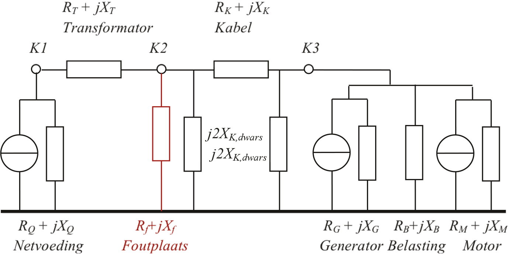Op knooppunt K2 is een driefasensymmetrische storing aangebracht in de vorm van de impedantie Rf + jXf. Met de sequentiële storingsanalyse wordt de subtransiënte kortsluitstroom Ik" op de aangegeven foutplaats berekend. Daarnaast worden alle spanningen, tak- en elementstromen berekend. Stromen en spanningen kunnen zowel complex als absoluut per fase (a, b, c) of per systeem (homopolair, normaal, invers) worden weergegeven. In het vervangingsschema van figuur 10.7 wordt de kortsluiting op knooppunt K2 gevoed door de netvoeding en de transformator en door de kortsluitstroombijdragen van de generator en de motor. Daarnaast is de belasting in de kortsluitsituatie niet verwaarloosd, zodat deze ook dan de door de vervangingsimpedantie bepaalde stroom blijft trekken.
In een rekenvoorbeeld wordt aangetoond hoe met de methode een aantal opeenvolgende acties (kortsluitingen en schakelhandelingen) die veranderingen in het net tot gevolg hebben, kunnen worden doorgerekend. Een stamvoeding, bestaande uit drie parallelle circuits met kabels met geleiders van 150 mm2 Cu en 240 mm2 Al, voedt een MS-distributienet vanuit een 50/10 kV onderstation. Het MS-distributienet is niet expliciet gemodelleerd, maar wordt vertegenwoordigd door een belasting van 7,8 MW bij een cos(φ) van 0,9 (500 A bij nominale spanning). Het net is niet geaard. Op het onderstation is voor 30 MVA aan decentrale opwekking aangesloten, die is gemodelleerd met een enkele synchrone generator. Het net tussen onderstation met voeding en schakelstation is afgebeeld in figuur 10.29. De afgebeelde spanningen zijn fasespanningen.
Van het net van figuur 10.29 zijn in verband met een proef gedurende een lange tijd de stromen en de spanningen gemonitord. In deze periode heeft zich in een van de voedingskabels op 60% van de afstand vanaf het onderstation een tweefasenkortsluiting met aardcontact voorgedaan. Het verloop van de kortsluiting is geregistreerd in het onderstation. Figuur 10.30 toont het verloop in de gemeten stroom door de fasen aan de voedende zijde en in de gemeten spanning op de voedende rail in het onderstation.
De kortsluiting tussen de fasen A, C en aarde vindt plaats op t = 990 ms. Duidelijk zichtbaar is de invloed van de afnemende kortsluitbijdrage van de generator. Ook is goed te zien dat de piek in fase C positief is en in fase A negatief. De beginkortsluitstroom heeft een effectieve waarde van ongeveer 6,4 kA. De spanning van de gestoorde fasen neemt sterk af en de spanning van de niet gestoorde fase neemt sterk toe: tot een effectieve waarde van 8,3 kV.
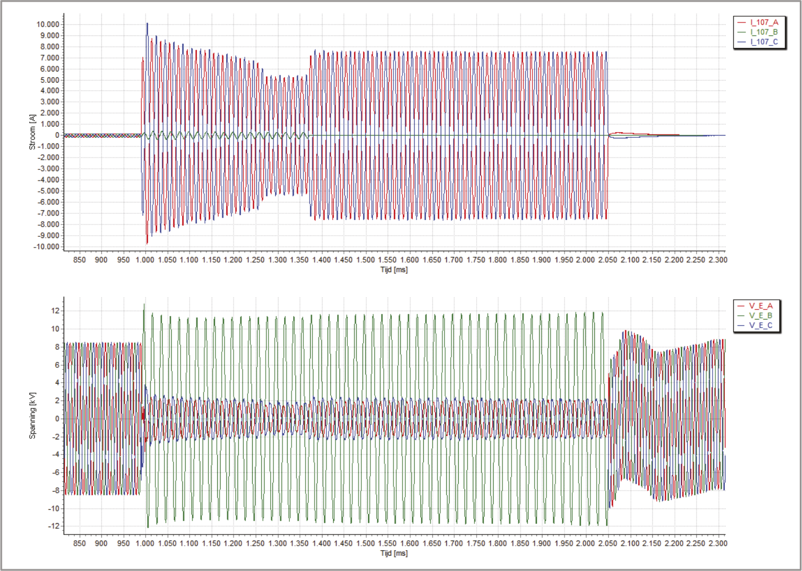Na 290 ms, op t = 1280 ms, wordt de decentrale opwekking van het net geschakeld. Als gevolg van het afgenomen kortsluitvermogen in het onderstation vermindert de voeding van de kortsluitstroom, tot een effectieve waarde van ongeveer 3,8 kA.
Na 380 ms, op t = 1370 ms, opent de vermogenschakelaar in het kortgesloten circuit aan de zijde van het schakelstation. De beveiliging is richtingsgevoelig, waardoor de afschakeling snel kan plaatsvinden. Hierdoor kan de levering aan het net achter het schakelstation door blijven gaan. De kortsluiting wordt nu alleen gevoed vanuit het onderstation. De voeding van de kortsluitstroom neemt toe, tot een effectieve waarde van ongeveer 5,4 kA.
Na 1060 ms, op t = 2050 ms, opent de vermogenschakelaar in het kortgesloten circuit aan de zijde van het onderstation. De ingestelde tijd is gekozen met het oog op de selectiviteit. De spanning herstelt zich direct, waarbij een snel uitdempende gelijkstroomcomponent zichtbaar is.
Het verloop van de storing is gesimuleerd met het sterk vereenvoudigde model van het complete distributienet, afgebeeld in figuur 10.29. Het voedende net heeft een kortsluitvermogen van 3600 MVA (Ik" = 40 kA bij 52,5 kV) en de transformator heeft een nominaal vermogen van 32 MVA en een relatieve kortsluitspanning van 19,3%. De kabelcircuits hebben elk een lengte van 3 km en bestaan uit kabels met 150 mm2 Cu-geleiders en 240 mm2 Al-geleiders, resulterend in een normale impedantie van Z1 = 0,426+j0,238 Ω en een homopolaire impedantie van Z0 = 3,154+j3,253 Ω. Gesimuleerd is een kortsluiting op 60% van de afstand vanaf het onderstation.
Figuur 10.31 toont het resultaat voor de berekening van de tweefasenkortsluiting tussen de fasen A en C met aardcontact. De voedende stroom in het kortgesloten circuit bedraagt bij het onderstation 6,5 kA. Dit is iets meer dan de effectieve waarde van de registratie in figuur 10.30. De spanning in de niet gestoorde fase is 8,9 kV.
Figuur 10.32 toont het resultaat voor de berekening, waarbij op t = 1280 ms de generator is afgeschakeld. De voeding van de kortsluiting vanuit het onderstation is afgenomen tot 3,7 kA. Dit is iets minder dan de effectieve waarde van de registratie in figuur 10.30. De bijdrage vanuit de andere twee circuits is 2,5 kA. De totale kortsluitstroom bedraagt 6,2 kA.
Figuur 10.33 toont het resultaat voor de berekening, waarbij op t = 1370 ms de vermogenschakelaar in het gestoorde circuit aan de zijde van het schakelstation is afgeschakeld. De voeding van de kortsluitstroom vanuit het onderstation is nu gelijk aan de kortsluitstroom zelf en bedraagt 5,6 kA. Deze waarde is iets minder dan de effectieve waarde van de registratie in figuur 10.30.
Storingen in het MS-netwerk hebben de grootste invloed op de betrouwbaarheid van de levering van elektriciteit (zie hoofdstuk 12). Het is gebruikelijk na een kortsluiting de foutplaats op te sporen door elk netstation in een MS-streng te inspecteren, hetgeen veel tijd kost. Door de foutplaats te schatten aan de hand van metingen van spanning en stroom in het onderstation tijdens de kortsluiting en deze te vergelijken met een kortsluitberekening aan het model van het net, kan hier veel tijd mee worden bespaard (Oirsouw, 2003). De nauwkeurigheid van de methode hangt nauw samen met de exactheid van het model en de nauwkeurigheid van de meting. De normale impedanties van het net zijn voldoende nauwkeurig bekend, zodat in geval van een twee- of driefasenkortsluiting een grote nauwkeurigheid behaald kan worden. De homopolaire impedantie is echter niet altijd nauwkeurig bekend, zodat de foutplaats in geval van een fase-aardsluiting veelal minder nauwkeurig berekend kan worden.
De meting kan worden uitgevoerd met apparatuur voor stationsautomatisering of met digitale beveiligingsrelais. Spanning en stroom worden continu gemeten en gedurende korte tijd lokaal bewaard. Indien zich een verstoring heeft voorgedaan, worden de metingen doorgestuurd naar een centraal systeem. De gegevens worden vervolgens in twee stappen geanalyseerd. In de eerste stap worden de metingen getransformeerd in signalen die de momentane amplitudes en fasen weergeven. Van deze signalen worden tevens de momentane waarden van de symmetrische componenten bepaald. Elke storing vertoont een karakteristiek gedrag in de normale, inverse en homopolaire componenten. Door de momentane waarden van de symmetrische componenten te vergelijken met de karakteristieke eigenschappen van de diverse fouttypen, wordt het fouttype vastgesteld. Hierbij wordt gebruik gemaakt van een aantal kennisregels, die zijn afgeleid uit de praktijkmetingen en de componentnetwerken voor de kortsluittypen van figuur 10.10:
De hierboven genoemde kennisregels zijn samengevat als de karakteristieke eigenschappen van kortsluittypen van tabel 10.8. Door de metingen te vergelijken met deze tabel kan het actuele type van de kortsluiting vastgesteld worden.
Kortsluittype |
I1 > I1,pre |
I0 > 0 |
I2 > 0 |
I1 –I1,pre >> I0 |
I2 >> I0 |
Fase-aarde |
Ja |
Ja |
Ja |
Nee |
Nee |
Twee fasen-aarde |
Ja |
ja |
Ja |
Ja |
Ja |
Twee fasen |
Ja |
Nee |
ja |
Ja |
Ja |
Drie fasen |
Ja |
Nee |
Nee |
Ja |
Nee |
Het is ook mogelijk te detecteren of een asymmetrische kortsluiting optreedt in een wel of niet geaard net. Dit kan worden afgeleid uit het quotiënt van de uit de metingen bepaalde homopolaire spanning en negatieve homopolaire stroom.
| Ω | [ |
10.57 |
] |
De fasehoek van de impedantie Zg geeft een indicatie of de foutstroom een inductief dan wel een capacitief karakter heeft. Ook de grootte van de impedantie heeft een relatie tot de aardingsimpedantie in het netwerk. Tabel 10.9 geeft een samenvatting van de karakteristieke eigenschappen met betrekking tot de aarding.
Netwerktype |
|Zg| (Ω) |
Arg(Zg) (graden) |
Impedantiegeaard |
Z0 aardingssysteem |
90 |
Zwevend |
1/(2 π f ⋅ C0 netwerk) |
–90 |
Het blijkt dat de absolute waarde en de fasehoek van de impedantie Zg in tabel 10.9 afhangt van de wijze waarop het net geaard is. In een geaard systeem is de berekende impedantie Zg nagenoeg gelijk aan de homopolaire impedantie Z0 van het aardingsysteem (aardingstransformator of sterpuntgeaarde transformator). De hoek van de berekende impedantie is dan ongeveer 90 graden. In een zwevend netwerk is de berekende impedantie Zg nagenoeg gelijk aan de impedantie van de totale homopolaire capaciteit in het zwevende MS-net. De hoek van de berekende impedantie is in dat geval ongeveer –90 graden.
Met de kennis van het type kortsluiting kan de impedantie van de meetplaats naar de kortsluitplaats worden berekend. Aangezien de weerstand op de foutplaats niet altijd nul is, wordt alleen met het reactantiedeel van de impedantie gewerkt. Tabel 10.10 geeft een samenvatting van de berekeningen van de reactanties X1 en X0 voor de diverse fouttypen uit de gemeten spanningen U1, U2 en U0 en gemeten stromen I1 en I2. De berekeningen zijn gebaseerd op de standaardsituaties van figuur 10.10 en tabel 10.3.
Kortsluittype |
Reactantie van meetplaats naar foutplaats |
Fase-aarde |
2X1 + X0 = Im((U1 + U2 + U0) / I2) |
Twee fasen B-C-aarde |
X1 = Im((U1 – U2 ) / (I1 – I2)) |
Twee fasen A-B-aarde |
X1 = Im((U1 – a ⋅ U2) / (I1 – a ⋅ I2)) |
Twee fasen A-C-aarde |
X1 = Im((U1 – a2 ⋅ U2) / (I1 – a2 ⋅ I2)) |
Twee fasen B-C |
X1 = Im((U1 – U2) / (I1 – I2)) |
Twee fasen A-B |
X1 = Im((U1 – a ⋅ U2) / (I1 – a ⋅ I2)) |
Twee fasen A-C |
X1 = Im((U1 – a2 ⋅ U2) / (I1 – a2 ⋅ I2)) |
Drie fasen |
X1 = Im(U1 / I1) |
In de tweede stap wordt het netmodel geanalyseerd. Aan de hand van de meetgegevens vóór de kortsluiting worden de belastingen ingesteld. Vervolgens worden kortsluitberekeningen gemaakt met de sequentiële kortsluitstroomberekening. Op opeenvolgende afstanden vanaf de meetlocatie in de MS-streng worden kortsluitingen aangebracht en wordt telkens de impedantie vanaf de meetlocatie tot de foutlocatie vastgesteld. Van deze impedantie wordt de reactantie vergeleken met de waarde die in de eerste stap uit de meetwaarden was berekend. De locatie waarvan de berekende reactantie het best overeenkomt met de uit de metingen bepaalde reactantie is de meest waarschijnlijke foutplaats.
De hierboven beschreven methode wordt toegelicht aan de hand van de registratie van figuur 10.30 van een kortsluiting in het net van figuur 10.29. De meting heeft plaatsgevonden in het onderstation. De eerste stap betreft het omzetten en analyseren van de gemeten waarden. De stromen en spanningen van figuur 10.30 worden eerst omgezet in een signaal dat het momentane verloop van de amplitudes van de fasespanningen en fasestromen weergeeft. Figuur 10.34 geeft de topwaarde van alle signalen weer. Figuur 10.34 laat duidelijk zien dat de kortsluiting begint op t = 990 ms. De amplitudes van de stromen in de fasen A en C bereiken een hoge waarde, die tussen t = 1400 ms en t = 2050 ms een vrij constante waarde aannemen. Op t = 2050 ms wordt de kortsluiting afgeschakeld. Tevens is te zien dat de stroom in fase B relatief gezien vrij weinig verandert. Dit is een indicatie voor een kortsluiting in de fasen A en C. De amplitudes van de spanningen in de fasen A en C nemen sterk af, maar worden niet nul. Dit is een indicatie dat de kortsluiting zich verderop in het net bevindt.
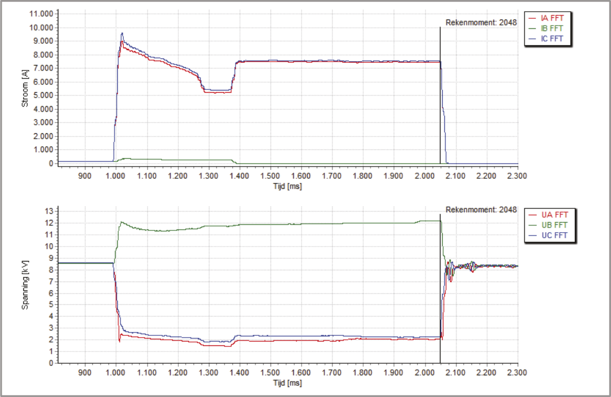De spanningen en stromen van de fasen A, B en C geven een eerste indicatie over het type en de plaats van de kortsluiting. Het beschreven algoritme in een rekenprogramma werkt niet in het driefasensysteem maar met de in het symmetrische componentensysteem getransformeerde meetwaarden. De transformatie van de signalen van figuur 10.34 levert de signalen die zijn weergegeven in figuur 10.35.
Figuur 10.35 laat zien dat de stromen in de normale en inverse componentsystemen (I1 en I2) door de kortsluiting sterk toenemen. De amplitude van beide componentstromen zijn ongeveer gelijk. Tussen t = 1400 ms en t = 2050 ms is de topwaarde ongeveer 4300 A en de effectieve waarde daarvan is 3050 A. De amplitude van de homopolaire stroom (I0) kan niet goed uit de figuur worden herleid. Uit de metingen blijkt dat I0 = 25 A. Voor de spanningen zijn de effectieve waarden: U0 = 2,9 kV, U1 = 3,6 kV en U2 = 2,2 kV.
Met deze gegevens wordt eerst aan de hand van tabel 10.8 het kortsluittype bepaald:
| I1 > I1,pre | ja, dus kortsluiting |
| I0 > 0 | ja, dus kortsluiting met aardcontact |
| I2 > 0 | ja, dus kortsluiting met één of twee fasen |
| I1 – I1,pre >> I0 | ja, dus kortsluiting met twee of drie fasen |
| I2 >> I0 | ja, dus kortsluiting met twee fasen |
Hieruit wordt geconcludeerd dat het een tweefasenkortsluiting betreft met aardcontact. Met behulp van formule 10.57 wordt de impedantie Zg bepaald. Voor deze berekening is naast de amplitude ook de fasehoek van U0 en I0 nodig. Uit de metingen blijkt de fasehoek voor de homopolaire spanning 77 graden en voor de homopolaire stroom –34 graden te zijn. Hieruit wordt berekend: |Zg| = 116 Ω en fasehoek van Zg is: –69 graden. Aan de hand van tabel 10.9 wordt geconcludeerd dat het een kortsluiting in een zwevend netwerk betreft, omdat de fasehoek het dichtst ligt bij de theoretische waarde van –90 graden. De totale homopolaire capaciteit van alle op het onderstation aangesloten MS-kabels van het netwerk (niet afgebeeld in figuur 10.29) is: C0 = 1/(2π⋅f⋅ Zg) = 2,7⋅10-5 F, hetgeen overeenkomt met een totale lengte van 135 km op het onderstation aangesloten kabels (bij een gemiddelde waarde van C0 = 0,2 μF per km).
Met tabel 10.10 kan de reactantie van het meetpunt bij het onderstation naar de foutplaats worden berekend. Deze is voor de tweefasen A-C-aardfout:
X1 = Im((U1–a2⋅U2) / (I1–a2⋅I2)) = 0,14 Ω .
waarin:
| U1 = 3624 V, | met fasehoek –170 graden |
| U2 = 2233 V, | met fasehoek –28 graden |
| I1 = 3053 A, | met fasehoek 133 graden |
| I2 = 3073 A, | met fasehoek 73 graden |
| a en a2: | de complexe operators a en a2 (zie paragraaf 7.5) |
Indien, zoals in paragraaf 10.6.2 gesteld, de totale reactantie van de kabel in dit voorbeeld gelijk is aan Z1 = 0,238 Ω, dan bevindt zich de kortsluiting op 0,14/0,238⋅100% = 60% van het onderstation.
Phase to Phase is onderdeel van Technolution. © 2009-2021